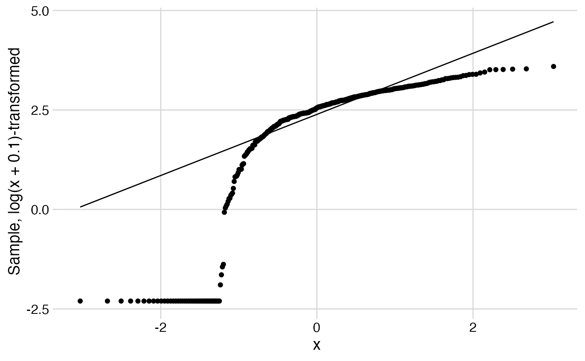

Installation
The khsmisc package can be installed from GitHub:
# if "remotes" library is missing, install it first:
# install.packages("remotes")
remotes::install_github("stopsack/khsmisc", build_vignettes = TRUE)To access the documentation after installing the package, run
help("khsmisc")or
vignette("khsmisc")Setting up a new RMarkdown
After successfully installing khsmisc:
-
Create an RMarkdown file
RStudio: File > New File > R Markdown… > From Template > khsmisc RMarkdown template
Customize the YAML header
- Change the
title:andauthor:fields. - The date will automatically be updated when compiling the document.
- Note that this type of code, “YAML,” is sensitive to exact identation. Every indentation is done by exactly two spaces.
-
Load the package
The template provides code that will load a number of packages via the khsverse meta-package:
library(khsverse)- To just load the khsmisc package by itself, replace
library(khsverse)bylibrary(khsmisc). - The template also includes code to set graphics output to SVG format. If PNG output is preferred or the svglite package is not installed, that part can be deleted.
-
Knit the RMarkdown a first time
The RMarkdown is ready to be compiled using the Knit button. An HTML document should open that has nothing but a title and the startup messages of
khsverseabout all the packages it loads. If an an error message is shown instead, perhaps one of the packages was not installed properly?Learn more about the syntax of RMarkdown in the RStudio cheatsheets.
Data handling
Load the TCGA BLCA dataset
Participant and tumor data from the Cancer Genome Atlas Bladder
Cancer “cohort” (BLCA) will be used in their published 2017
version. Insert a new R chunk into the markdown (toolbar:
Insert > R), and add code for reading a
tab-separated file (“TSV”). The code retrieves the file
data_clinical_patient.txt, which can be downloaded as part
of the cBioPortal
TCGA-BLCA tarball (276 MB). A copy of just the “clinical” dataset is
available in the extdata directory of the khsmisc package.
The first four lines of the TSV file are skipped because they contain
meta-data.
clinical <- read_tsv(file = system.file("extdata", "data_clinical_patient.txt",
package = "khsmisc", mustWork = TRUE),
skip = 4)
#> Rows: 411 Columns: 83
#> ── Column specification ────────────────────────────────────────────────────────
#> Delimiter: "\t"
#> chr (81): OTHER_PATIENT_ID, PATIENT_ID, FORM_COMPLETION_DATE, PROSPECTIVE_CO...
#> dbl (2): AGE, DAYS_TO_INITIAL_PATHOLOGIC_DIAGNOSIS
#>
#> ℹ Use `spec()` to retrieve the full column specification for this data.
#> ℹ Specify the column types or set `show_col_types = FALSE` to quiet this message.An inventory of the dataset:
varlist(clinical) %>%
print(n = 15) # show the first 15 lines of output
#> # A tibble: 83 × 4
#> name n class label
#> <chr> <dbl> <chr> <chr>
#> 1 OTHER_PATIENT_ID 411 character NULL
#> 2 PATIENT_ID 411 character NULL
#> 3 FORM_COMPLETION_DATE 411 character NULL
#> 4 PROSPECTIVE_COLLECTION 411 character NULL
#> 5 RETROSPECTIVE_COLLECTION 411 character NULL
#> 6 DAYS_TO_BIRTH 411 character NULL
#> 7 SEX 411 character NULL
#> 8 HEIGHT 411 character NULL
#> 9 WEIGHT 411 character NULL
#> 10 RACE 411 character NULL
#> 11 ETHNICITY 411 character NULL
#> 12 HISTORY_OTHER_MALIGNANCY 411 character NULL
#> 13 HISTORY_NEOADJUVANT_TRTYN 411 character NULL
#> 14 NONINVASIVE_BLADDER_HISTORY 411 character NULL
#> 15 NONINVASIVE_BLADDER_CA_TX_TYPE 411 character NULL
#> # … with 68 more rowsSelect and rename variables of interest:
clinical <- clinical %>%
select(id = PATIENT_ID,
sex = SEX,
race = RACE,
ethnicity = ETHNICITY,
height = HEIGHT,
weight = WEIGHT,
smoke = TOBACCO_SMOKING_HISTORY_INDICATOR,
agedx = AGE,
dxyear = INITIAL_PATHOLOGIC_DX_YEAR,
c_tstage = CLIN_T_STAGE,
p_stage = AJCC_PATHOLOGIC_TUMOR_STAGE,
p_tstage = AJCC_TUMOR_PATHOLOGIC_PT,
p_nstage = AJCC_NODES_PATHOLOGIC_PN,
mstage = AJCC_METASTASIS_PATHOLOGIC_PM,
grade = GRADE,
histology = HISTOLOGICAL_SUBTYPE,
os_status = OS_STATUS,
os_mos = OS_MONTHS,
dfs_status = DFS_STATUS,
dfs_mos = DFS_MONTHS)Load Taylor et al. aneuploidy calls
Additional exposure data on tumors of the same study participants comes in the form of derived tumor aneuploidy scores as per Taylor, …, Meyerson (Cancer Cell 2018;33:676–689).
Next, load the Excel file provided as their Supplementary Table 2 via a HTTPS URL, show dataset inventory, and select/rename variables.
The following code can no longer be excuted because the journal blocks simple downloads. Instead, manually open the link above in the browser.
### THIS CHUNK IS NOT BEING EXECUTED
# Generate temporary path
temporary_path <- tempfile(fileext = ".xlsx")
# Download Taylor suppl. table 2 to that temporary path
download.file(url = "https://www.cell.com/cms/10.1016/j.ccell.2018.03.007/attachment/2d887978-0a9c-4e90-af00-66eb5948673b/mmc2.xlsx",
destfile = temporary_path)
# Print temporary file location
print(paste("Taylor et al. suppl. table 2 is temporarily available locally at",
temporary_path))
# Read Excel file from temporary path:
taylor <- read_xlsx(path = temporary_path,
skip = 1) # skip the first line
# --end workaround--This example will continue to use SIMULATED data as follows:
# Simulated aneuploidy data for demonstration purposes:
set.seed(123)
taylor <- clinical %>%
select(id) %>%
mutate(
id = paste0(id, "-01"), # make simulated IDs match Taylor et al.'s
purity = rnorm(n = n(),
mean = 0.6,
sd = 0.2),
ascore = rnorm(n = n(),
mean = 12,
sd = 9),
ascore = case_when(ascore < 0 ~ 0,
ascore > 40 ~ 40,
TRUE ~ ascore))
varlist(taylor)
#> # A tibble: 3 × 4
#> name n class label
#> <chr> <dbl> <chr> <chr>
#> 1 id 411 character NULL
#> 2 purity 411 numeric NULL
#> 3 ascore 411 numeric NULLMerging datasets
Left-join the Taylor et al. aneuploidy scores to the
clinical data, i.e., keep all observations from
clinical and those that match from taylor.
Because IDs in taylor are tumor IDs, they contain an extra
suffix that we need to remove before merging. We also need to check that
this procedure did not introduce duplicates.
Recoding variables
Consistently code categorical variables as a factor and
continuous variables as numeric:
combined <- combined %>%
mutate(
across(.cols = c(sex, race, ethnicity, smoke,
c_tstage, p_stage, p_tstage, p_nstage, mstage,
grade, histology, os_status, dfs_status),
.fns = factor),
across(.cols = c(height, weight, agedx, dxyear, os_mos, dfs_mos),
.fns = as.numeric))
#> Warning: There were 5 warnings in `mutate()`.
#> The first warning was:
#> ℹ In argument: `across(...)`.
#> Caused by warning:
#> ! NAs introduced by coercion
#> ℹ Run `dplyr::last_dplyr_warnings()` to see the 4 remaining warnings.The warning messages are expected, as some numeric variables contain non-numeric values.
Next, recode various labels of missing data in categorical variables
to a consistent missing type, using fct_collapse:
# Tabulate some examples
combined %>%
select(race, dfs_status, histology) %>%
map(.f = table,
useNA = "always") # always show NA ("missing") levels
#> $race
#>
#> [Not Available] ASIAN BLACK OR AFRICAN AMERICAN
#> 18 44 23
#> WHITE <NA>
#> 326 0
#>
#> $dfs_status
#>
#> [Not Available] DiseaseFree Recurred/Progressed <NA>
#> 89 179 143 0
#>
#> $histology
#>
#> [Discrepancy] [Not Available] Non-Papillary Papillary <NA>
#> 1 4 273 133 0
# Collapse all actually missings to R's missing
combined <- combined %>%
mutate(
across(.cols = where(is.factor),
.fns = ~fct_collapse(.,
NULL = c("[Not Available]",
"[Discrepancy]",
"Indeterminate"))))
#> Warning: There were 13 warnings in `mutate()`.
#> The first warning was:
#> ℹ In argument: `across(...)`.
#> Caused by warning:
#> ! Unknown levels in `f`: [Not Available], [Discrepancy], Indeterminate
#> ℹ Run `dplyr::last_dplyr_warnings()` to see the 12 remaining warnings.
# Revisit the examples after recoding
combined %>%
select(race, dfs_status, histology) %>%
map(.f = table,
useNA = "always") # always show NA ("missing") levels
#> $race
#>
#> NULL ASIAN BLACK OR AFRICAN AMERICAN
#> 18 44 23
#> WHITE <NA>
#> 326 0
#>
#> $dfs_status
#>
#> NULL DiseaseFree Recurred/Progressed <NA>
#> 89 179 143 0
#>
#> $histology
#>
#> NULL Non-Papillary Papillary <NA>
#> 5 273 133 0Recode event indicators to the numeric values that
survival functions require:
combined <- combined %>%
mutate(
dfs_event = case_when(
dfs_status == "Recurred/Progressed" ~ 1,
dfs_status == "DiseaseFree" ~ 0),
os_event = case_when(
os_status == "DECEASED" ~ 1,
os_status == "LIVING" ~ 0))Recode race categories to make them more readable:
# Before:
combined %>%
count(race)
#> # A tibble: 4 × 2
#> race n
#> <fct> <int>
#> 1 NULL 18
#> 2 ASIAN 44
#> 3 BLACK OR AFRICAN AMERICAN 23
#> 4 WHITE 326
combined <- combined %>%
# Change from all uppercase:
mutate(
race = factor(str_to_title(race)),
ethnicity = factor(str_to_title(ethnicity)),
# Make "Black" as short as other categories
race = fct_recode(race, Black = "Black Or African American"),
# Make "White" the reference category because of sample size
race = fct_relevel(race, "White"))
# After:
combined %>%
count(race)
#> # A tibble: 4 × 2
#> race n
#> <fct> <int>
#> 1 White 326
#> 2 Asian 44
#> 3 Black 23
#> 4 Null 18Assign meaningful labels to the smoke variable, based on
inspection of other smoking-related variables in the full dataset:
combined <- combined %>%
mutate(
smoke = factor(
smoke,
levels = 1:5,
labels = c("Never", "Current",
"Former, quit >15 y", "Former, quit <15 y",
"Former")),
# Combine all "formers":
smoke3 = fct_collapse(
smoke,
Former = c("Former",
"Former, quit >15 y",
"Former, quit <15 y")),
# Change order of levels, starting with "never" as the reference:
smoke3 = fct_relevel(
smoke3,
"Never", "Former", "Current"))Labeling variables
combined <- combined %>%
set_variable_labels(
sex = "Sex",
race = "Self-reported race",
ethnicity = "Ethnicity",
smoke = "Smoking status at diangosis",
smoke3 = "Smoking status at diagnosis",
agedx = "Age at diagnosis",
dxyear = "Calendar year of initial diagnosis",
bmidx = "Body mass index at diagnosis",
p_stage = "AJCC pathologic stage",
mstage = "Metastases at diagnosis",
grade = "Histologic grade",
histology = "Histologic subtype",
ascore = "Aneuploidy score",
ascore_cat = "Aneuploidy score",
purity = "DNA tumor purity by ABSOLUTE")Data description
Contingency tables
combined %>%
tabulate_rowcol(smoke3, race) %>% # make contingency table
mygt() # format
#> Warning: There was 1 warning in `mutate()`.
#> ℹ In argument: `rowvar = (function (f, na_level = "(Missing)") ...`.
#> Caused by warning:
#> ! `fct_explicit_na()` was deprecated in forcats 1.0.0.
#> ℹ Please use `fct_na_value_to_level()` instead.
#> ℹ The deprecated feature was likely used in the dplyr package.
#> Please report the issue at <https://github.com/tidyverse/dplyr/issues>.| smoke3 X race | White | Asian | Black | Null | Total |
|---|---|---|---|---|---|
| Never | 79 | 24 | 5 | 3 | 111 |
| Former | 175 | 6 | 11 | 6 | 198 |
| Current | 61 | 14 | 5 | 9 | 89 |
| (Missing) | 11 | 0 | 2 | 0 | 13 |
| Total | 326 | 44 | 23 | 18 | 411 |
Table of distributional statistics
Exposure and confounders
combined %>%
# make descriptive table:
tsummary(race, agedx, bmidx, dxyear, purity, by = race) %>%
select(-mean, -sd, -sum) %>% # remove undesired statistics
mutate(across(.cols = where(is.numeric),
.fns = round, digits = 2)) %>% # round
mygt() # format
#> Warning: There was 1 warning in `mutate()`.
#> ℹ In argument: `across(.cols = where(is.numeric), .fns = round, digits = 2)`.
#> ℹ In group 1: `variable = "agedx"`.
#> Caused by warning:
#> ! The `...` argument of `across()` is deprecated as of dplyr 1.1.0.
#> Supply arguments directly to `.fns` through an anonymous function instead.
#>
#> # Previously
#> across(a:b, mean, na.rm = TRUE)
#>
#> # Now
#> across(a:b, \(x) mean(x, na.rm = TRUE))| race | rows | obs | distin | min | q25 | median | q75 | max |
|---|---|---|---|---|---|---|---|---|
| agedx | ||||||||
| White | 326 | 326 | 46 | 44.00 | 61.00 | 70.00 | 76.75 | 90.00 |
| Asian | 44 | 44 | 28 | 34.00 | 54.75 | 62.50 | 73.00 | 85.00 |
| Black | 23 | 23 | 17 | 43.00 | 59.50 | 66.00 | 73.00 | 90.00 |
| Null | 18 | 18 | 15 | 47.00 | 57.50 | 70.00 | 76.50 | 84.00 |
| bmidx | ||||||||
| White | 326 | 283 | 268 | 14.96 | 24.23 | 26.99 | 30.41 | 59.05 |
| Asian | 44 | 43 | 43 | 16.02 | 19.47 | 21.01 | 22.39 | 25.36 |
| Black | 23 | 18 | 19 | 18.96 | 23.04 | 26.16 | 28.52 | 68.32 |
| Null | 18 | 17 | 17 | 18.82 | 23.53 | 25.83 | 27.28 | 33.46 |
| dxyear | ||||||||
| White | 326 | 313 | 16 | 1999.00 | 2009.00 | 2011.00 | 2012.00 | 2013.00 |
| Asian | 44 | 43 | 8 | 2005.00 | 2011.00 | 2012.00 | 2013.00 | 2013.00 |
| Black | 23 | 22 | 8 | 2006.00 | 2010.00 | 2011.00 | 2011.75 | 2013.00 |
| Null | 18 | 15 | 8 | 2000.00 | 2006.00 | 2007.00 | 2009.50 | 2013.00 |
| purity | ||||||||
| White | 326 | 326 | 326 | 0.11 | 0.48 | 0.59 | 0.73 | 1.25 |
| Asian | 44 | 44 | 44 | 0.14 | 0.44 | 0.57 | 0.72 | 1.02 |
| Black | 23 | 23 | 23 | 0.32 | 0.51 | 0.61 | 0.77 | 1.04 |
| Null | 18 | 18 | 18 | 0.36 | 0.56 | 0.62 | 0.76 | 0.91 |
Outcome
combined %>%
tsummary(starts_with("ascore")) %>% # make descriptive table
select(-mean, -sd, -sum) %>% # remove undesired statistics
mygt() # format| variable | rows | obs | distin | min | q25 | median | q75 | max |
|---|---|---|---|---|---|---|---|---|
| ascore | 411 | 411 | 368 | 0 | 6.392934 | 12.71552 | 18.1984 | 36.22543 |
Plots of the outcome
combined %>%
ggplot(mapping = aes(x = ascore)) +
geom_histogram(binwidth = 2) + # each bar = 2 units of "ascore"
theme_minimal_grid()Is the outcome reasonably normally distributed? Show a quantile–quantile plot before and after log transformation.
combined %>%
ggplot(aes(sample = ascore)) +
stat_qq() +
stat_qq_line() +
labs(y = "Sample, untransformed") +
theme_minimal_grid()
combined %>%
ggplot(aes(sample = log(ascore + 0.1))) +
stat_qq() +
stat_qq_line() +
labs(y = "Sample, log(x + 0.1)-transformed") +
theme_minimal_grid()
Main results
Study population: Applying and documenting exclusions
Because the main exposure is self-reported race, we will have to exclude participants with missing race from the analytical population.
# All participants:
nrow(combined)
#> [1] 411
# Exclude with missing race:
analytical <- combined %>%
filter(!is.na(race)) %>%
copy_labels_from(from = combined)
# Analytical population:
nrow(analytical)
#> [1] 411Note that the dataset contains participants with tumors that were metastatic at diagnosis (M1):
analytical %>%
count(mstage)
#> # A tibble: 4 × 2
#> mstage n
#> <fct> <int>
#> 1 NULL 3
#> 2 M0 195
#> 3 M1 11
#> 4 MX 202In the analytical dataset, does everyone have an aneuploidy score?
analytical %>%
mutate(missing_ascore = is.na(ascore)) %>%
tabulate_rowcol(missing_ascore, race) %>%
mygt()| missing_ascore X race | White | Asian | Black | Null | Total |
|---|---|---|---|---|---|
| FALSE | 326 | 44 | 23 | 18 | 411 |
| Total | 326 | 44 | 23 | 18 | 411 |
Table 1: Exposure-stratified characteristics of the study population
analytical %>%
table1(
ethnicity, sex, agedx, dxyear, smoke3, bmidx,
p_stage, mstage, grade, histology, purity,
by = race,
digits = list(agedx = c(1, 1),
dxyear = c(0, 0)))| Characteristic | Overall | By Self-reported race | |||
|---|---|---|---|---|---|
| White | Asian | Black | Null | ||
| N | 411 | 326 | 44 | 23 | 18 |
| Ethnicity | |||||
| Hispanic Or Latino | 9 (2%) | 5 (2%) | 0 (0%) | 0 (0%) | 4 (22%) |
| Not Hispanic Or Latino | 370 (90%) | 307 (94%) | 44 (100%) | 17 (74%) | 2 (11%) |
| Null | 32 (8%) | 14 (4%) | 0 (0%) | 6 (26%) | 12 (67%) |
| Sex | |||||
| Female | 108 (26%) | 83 (25%) | 8 (18%) | 10 (43%) | 7 (39%) |
| Male | 303 (74%) | 243 (75%) | 36 (82%) | 13 (57%) | 11 (61%) |
| Age at diagnosis | 69.0 (60.0, 76.0) | 70.0 (61.0, 76.8) | 62.5 (54.8, 73.0) | 66.0 (59.5, 73.0) | 70.0 (57.5, 76.5) |
| Calendar year of initial diagnosis | 2,011 (2,009, 2,012) | 2,011 (2,009, 2,012) | 2,012 (2,011, 2,013) | 2,011 (2,010, 2,012) | 2,007 (2,006, 2,010) |
| Unknown | 18 | 13 | 1 | 1 | 3 |
| Smoking status at diagnosis | |||||
| Never | 111 (28%) | 79 (25%) | 24 (55%) | 5 (24%) | 3 (17%) |
| Former | 198 (50%) | 175 (56%) | 6 (14%) | 11 (52%) | 6 (33%) |
| Current | 89 (22%) | 61 (19%) | 14 (32%) | 5 (24%) | 9 (50%) |
| Unknown | 13 | 11 | 0 | 2 | 0 |
| Body mass index at diagnosis | 26.0 (23.3, 29.7) | 27.0 (24.2, 30.4) | 21.0 (19.5, 22.4) | 26.2 (23.0, 28.5) | 25.8 (23.5, 27.3) |
| Unknown | 50 | 43 | 1 | 5 | 1 |
| AJCC pathologic stage | |||||
| NULL | 2 (0%) | 1 (0%) | 0 (0%) | 0 (0%) | 1 (6%) |
| Stage I | 2 (0%) | 1 (0%) | 1 (2%) | 0 (0%) | 0 (0%) |
| Stage II | 131 (32%) | 87 (27%) | 30 (68%) | 8 (35%) | 6 (33%) |
| Stage III | 141 (34%) | 115 (35%) | 11 (25%) | 8 (35%) | 7 (39%) |
| Stage IV | 135 (33%) | 122 (37%) | 2 (5%) | 7 (30%) | 4 (22%) |
| Metastases at diagnosis | |||||
| NULL | 3 (1%) | 2 (1%) | 1 (2%) | 0 (0%) | 0 (0%) |
| M0 | 195 (47%) | 136 (42%) | 39 (89%) | 9 (39%) | 11 (61%) |
| M1 | 11 (3%) | 9 (3%) | 0 (0%) | 1 (4%) | 1 (6%) |
| MX | 202 (49%) | 179 (55%) | 4 (9%) | 13 (57%) | 6 (33%) |
| Histologic grade | |||||
| NULL | 3 (1%) | 2 (1%) | 0 (0%) | 0 (0%) | 1 (6%) |
| High Grade | 387 (94%) | 321 (98%) | 26 (59%) | 23 (100%) | 17 (94%) |
| Low Grade | 21 (5%) | 3 (1%) | 18 (41%) | 0 (0%) | 0 (0%) |
| Histologic subtype | |||||
| NULL | 5 (1%) | 4 (1%) | 0 (0%) | 0 (0%) | 1 (6%) |
| Non-Papillary | 273 (66%) | 225 (69%) | 18 (41%) | 19 (83%) | 11 (61%) |
| Papillary | 133 (32%) | 97 (30%) | 26 (59%) | 4 (17%) | 6 (33%) |
| DNA tumor purity by ABSOLUTE | 0.59 (0.48, 0.73) | 0.59 (0.48, 0.73) | 0.57 (0.44, 0.72) | 0.61 (0.51, 0.77) | 0.62 (0.56, 0.76) |
Figure 1: Box-whiskers/dot plots

Restricted to high grade, non-missing aneuploidy scores and histology, and then color code by histology
analytical %>%
filter(grade == "High Grade") %>%
filter(!is.na(ascore) & !is.na(histology)) %>%
stripplot(x = race,
y = ascore,
color = histology) +
# change color palette:
scale_color_viridis_d(option = "cividis",
end = 0.8,
direction = -1) +
# add label:
labs(color = "Histology")
Table 2: Stratified and regression analyses
| Characteristic | Overall | By Self-reported race | |||
|---|---|---|---|---|---|
| White | Asian | Black | Null | ||
| N | 411 | 326 | 44 | 23 | 18 |
| Aneuploidy score | |||||
| [0,5] | 88 (21%) | 72 (22%) | 7 (16%) | 6 (26%) | 3 (17%) |
| (5,10] | 64 (16%) | 47 (14%) | 9 (20%) | 3 (13%) | 5 (28%) |
| (10,20] | 187 (45%) | 151 (46%) | 18 (41%) | 10 (43%) | 8 (44%) |
| (20,36.2] | 72 (18%) | 56 (17%) | 10 (23%) | 4 (17%) | 2 (11%) |
tribble(
~label, ~confounders, ~type,
"N", "", "total",
"Mean altered chromosome arms", "", "mean",
"Difference (95% CI):", "", "",
" Model 1: Age/sex-adjusted", "+ agedx + sex", "diff",
" Model 2: Model 1 + smoking", "+ agedx + sex + smoke3", "diff",
" Model 3: Model 2 + histology", "+ agedx + sex + smoke3 + histology", "diff",
" Model 4: Model 3 + grade", "+ agedx + sex + smoke3 + histology + grade", "diff") %>%
mutate(exposure = "race",
outcome = "ascore") %>%
table2(
data = analytical %>%
# evaluate all models in the same complete-case subset:
filter(!is.na(ascore) &
!is.na(smoke3) &
!is.na(histology) &
!is.na(grade)),
diff_digits = 1) %>%
mygt()| Self-reported race | White | Asian | Black | Null |
|---|---|---|---|---|
| N | 315 | 44 | 21 | 18 |
| Mean altered chromosome arms | 12.5 | 13.8 | 13.0 | 12.6 |
| Difference (95% CI): | ||||
| Model 1: Age/sex-adjusted | 0 (reference) | 1.3 (-1.3 to 4.0) | 0.7 (-2.9 to 4.3) | 0.3 (-3.6 to 4.2) |
| Model 2: Model 1 + smoking | 0 (reference) | 0.7 (-2.0 to 3.4) | 0.7 (-2.9 to 4.3) | 0.3 (-3.7 to 4.2) |
| Model 3: Model 2 + histology | 0 (reference) | 0.3 (-2.4 to 3.1) | 0.9 (-2.7 to 4.5) | -0.2 (-4.1 to 3.8) |
| Model 4: Model 3 + grade | 0 (reference) | 0.9 (-2.3 to 4.0) | 0.9 (-2.7 to 4.5) | 0.1 (-3.8 to 4.1) |
Table 3: Effect modification
Models are adjusted for age (and sex, unless sex is an effect modifier).
tribble(
~label, ~effect_modifier, ~stratum, ~confounders, ~type,
"By sex", NULL, NULL, "", "",
" Female", "sex", "Female", "+ agedx", "diff",
" Male", "sex", "Male", "+ agedx", "diff",
"By histology", NULL, NULL, "", "",
" Papillary", "histology", "Papillary", "+ agedx + sex", "diff",
" Non-Papillary", "histology", "Non-Papillary", "+ agedx + sex", "diff") %>%
mutate(exposure = "race",
outcome = "ascore") %>%
table2(
data = analytical %>%
filter(!is.na(ascore) &
!is.na(smoke3) &
!is.na(histology) &
!is.na(grade)),
diff_digits = 1) %>%
mygt()| Self-reported race | White | Asian | Black | Null |
|---|---|---|---|---|
| By sex | ||||
| Female | 0 (reference) | 0.1 (-5.3 to 5.6) | 0.6 (-4.8 to 6.0) | 1.4 (-4.5 to 7.3) |
| Male | 0 (reference) | 1.6 (-1.5 to 4.6) | 0.8 (-3.9 to 5.5) | -0.2 (-5.3 to 4.9) |
| By histology | ||||
| Papillary | 0 (reference) | 1.5 (-2.2 to 5.2) | 3.7 (-4.3 to 11.7) | -2.6 (-9.2 to 4.0) |
| Non-Papillary | 0 (reference) | -0.8 (-4.8 to 3.2) | 0.2 (-3.9 to 4.3) | 1.6 (-3.4 to 6.6) |